Comparing Projects
The topic I chose to look at the environment and climate change effects. My idea for this project was to show people how their actions affect the world in real time or find a way for people to reduce their waste. I decided to look at websites and mobiles apps to find current projects that are related to my topic.
Website: https://climate.nasa.gov
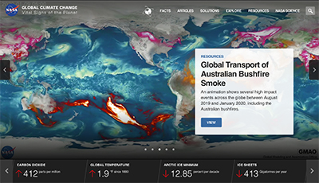One of most noticeable elements on the page is the moving images and statistics on the page. The top of the page includes a slideshow with different stories that the user can navigate through. The moving images intrigued me to look through the website because the interface was visually interesting, and the motions were smooth. The statistics below the main element would change colors and provide a little description that helped give more information to what it is claiming. Both of these elements incorporated the biggest problems in climate change/global warming into one section that is easy to understand.
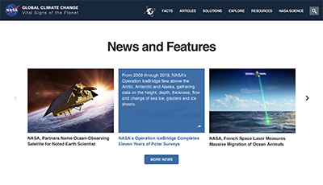Once the user scrolls past this section, the news and features section appear where they can read the most current news articles that relate to the topic. Users typically scroll past the news section on websites, but the images used drew in the user along with the micromotions on the articles once the user hovers over it. The section also gave the users additional options to navigate through the site and learn more about what the site is fighting for.
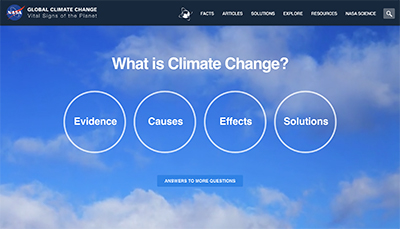Below the news articles are links that answer the question “What is Climate Change?” The image on the background moves and the text in the circles change once the user hovers over it. It was a new way to make it easy for the user to navigate through and choose what they want to read. It also directly states their goal because it provides options for the user to learn about climate change in an intuitive and creative way on a website. Because of the slight motions when the user hovers over the elements, it helps the user understand what the functionality of the element is on the page.
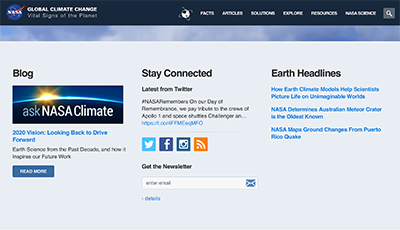The next section looks very similar to a footer, and this made me think that I reached the end of the page. However, when I continued to scroll, it showed more information and links on climate change. Since most footers have this design, it causes confusion for the user because it is going against the norm of webpages. Mainly the signing up for newsletter and social media icons caused me to assume it was the end. I thought the information following this section was more important than these links, so I would have placed this section below the next few sections to correlate with the order of importance and usability purposes.
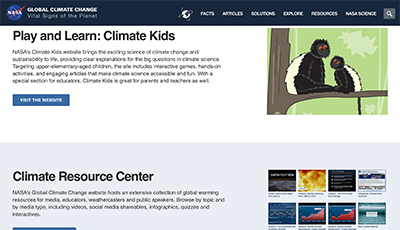The last section includes additional links for adults and kids to learn about climate change. I thought this was an appropriate location for this information because it is supplemental to the more important information listed at the top of the page. This section isn’t as intuitive as the previous ones, but it is fitting to the content and location.
I thought the NASA website provided a great way for people of different climate change knowledge and beliefs to come together and learn more information. It provided a clean and easy way to navigate interface and provided multiple options for people to learn. However, the layout of the webpage did force users to follow the information setup they had, but it was not a major concern to me when I scroll through the site.
App: LiveGreen
This was the first app that appeared when I searched “climate change” in the app store. It provides a way for a person to track their carbon footprint by putting in their activities every day. It rewards you with points when you improve your footprint, and you can then receive a sustainable product with the points you earn.
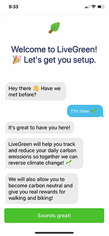 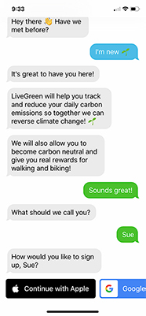 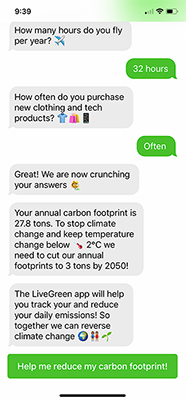
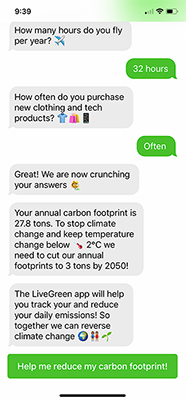
One of the biggest things that stood out to me in the app was the signing up process. It began with an interactive welcome message that continued until the setup was done. It asked how you would like to create an account (Apple, Google, Facebook, Email, etc.) and questions on your daily activities to calculate your carbon footprint, and it was in the format of sending a text which was creative.
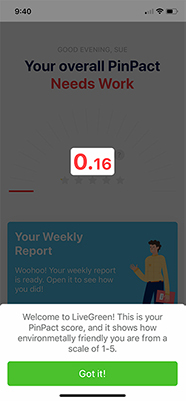 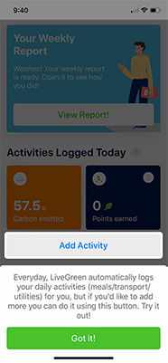After you finish answering the questions, the home screen of the app appears with your carbon footprint score on a scale of 1-5, with 5 being the best. It also utilizes this screen to help explain the navigation around the app before you get started.
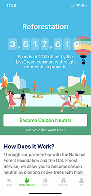 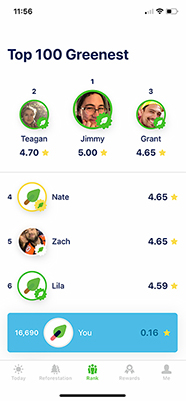The app creates an accessible tool for people to be sustainable in their day to day lives because it tracks the carbon footprint for activities logged and rewards you for your work. I believe it can be a way to make small changes in people’s lives that can make an impact in the world. This is also much more personalized for each individual because the tracker is based on your own activities rather than most carbon footprint calculators that give an estimate. There are different ways to navigate through the app and it is placed on the bottom of the screen to quickly maneuver. It includes a section on their project to plants trees for reforestation, and it gives the user an option to become a part of the change. The app implemented a competitive aspect to the app by showing the “greenest” people which gives people an incentive to be greener. The app has a simple interface that includes the necessary information to achieve their goals while learning, and it is a way to bring people together to create a cleaner world.